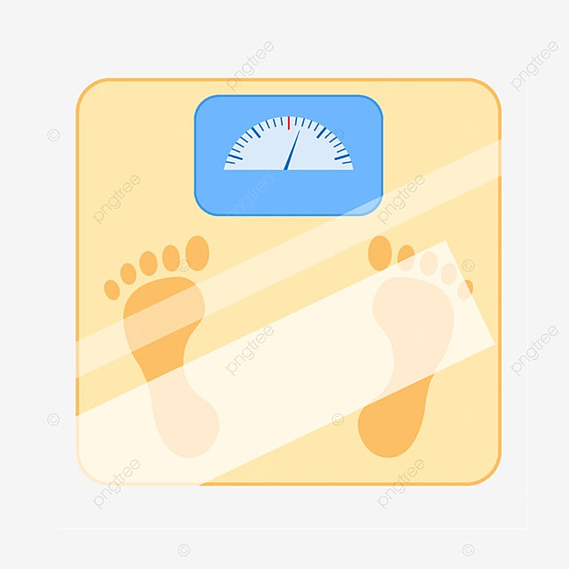

<ion-header [translucent]="true">
  <ion-toolbar color="tertiary">
    <ion-title>
      APP BMI
    </ion-title>
  </ion-toolbar>
</ion-header>

<ion-content class="ion-pading" [fullscreen]="true">
  <div class="ion-text-center"></div>
<ion-card color="dark" class="ion-padding">
<ion-item>
  <ion-input label="กรอกน้ำหนัก:" placeholder="kg"[(ngModel)]="weight"></ion-input>
  </ion-item>
  <br>
  <ion-item>
    <ion-input label="กรอกส่วนสูง:" placeholder="cm"[(ngModel)]="hight"></ion-input>
    </ion-item>
    <br>
    <ion-button sixe="large" expand="block" shape="round"(click)="oncal()">คำนวณ</ion-button>
    </ion-card>

    <ion-card color="warning">
      <ion-card-header>
        <ion-card-subtitle>ผลลัพธุ์</ion-card-subtitle>
        <ion-card-title>{{result | number : '1.0-2'}}</ion-card-title>
      </ion-card-header>
    </ion-card>
    <ion-card color="danger">
      <ion-card-header>
        <ion-card-subtitle>แปลผล</ion-card-subtitle>
        <ion-card-title>อยู่ในเกณฑ์ปกติ</ion-card-title>
      </ion-card-header>
    </ion-card>

